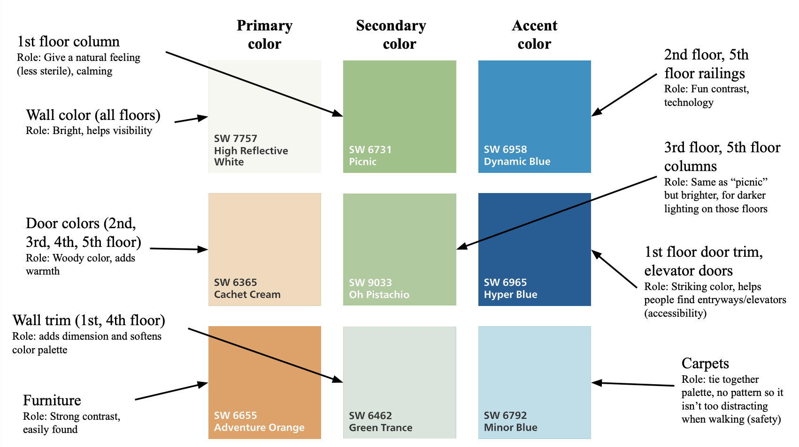

CRAVE AID
Background
Crave Aid was born from a shared frustration with food waste and the everyday question: "What can I make with what I already have?". Our team of four set out to solve this problem, especially for busy students and young professionals. Inspired by personal experiences and user interviews, we envisioned a tool that makes meal planning smarter, more sustainable, and more personalized.
My aims for this project were to:
- Use React to build a clean, usable frontend with intuitive pantry and recipe views.
- Work with Firebase to enable real-time ingredient storage and user-specific data persistence.
- Integrate external APIs, specifically TheMealDB, to dynamically fetch and display recipes.
- Practice full-stack collaboration—merging UI design with backend logic and debugging complex data flows.
Process & Challenges
Crave Aid was a full-stack collaboration that required tight coordination between frontend and backend systems. One of our biggest hurdles was syncing the complex data from TheMealDB API with our React-based UI. The API required two types of calls: one to fetch all matching meal IDs and another to retrieve full recipe data. To handle this, we built a two-step backend pipeline to pull the IDs, query full recipes, and then process them into a clean format - counting non-empty ingredients and matching them to the user’s pantry.
The biggest challenge came in communicating this data to the frontend. We cycled through multiple serialization strategies - 2D arrays, maps, even dynamic parameter packing—before landing on a solution using a custom Recipe class with getter methods. This allowed us to serialize cleanly into JSON and parse the data using JSON.parse on the frontend.
On my end, I designed and built the React frontend, setting up both the pantry and recipe pages with search, autofill, and results rendering. Once Firebase was integrated by my group member for persistent user data, I connected that flow to power pantry updates in real time. In the final stretch, I helped integrate backend responses into the frontend, ensuring our design remained accessible and visually clean while handling a lot of dynamic content.
Final Product
Here is my proposal for a color palette. It is annotated with justifications and the roles the colors play:
Finally, here is the final sketch with my chosen color palette, followed by an explanation of my design choices:

For my redesigned CIT color palette, I chose colors that are
bright and visually pleasing, but not over-stimulating or harsh.
The wall tints were selected to reflect sunlight and appear
lighter, making the space easy on the eyes under both natural
and fluorescent lighting. The slight green-yellow hue I used
feels warmer and less bland than the original gray. I used blue
accents for the railings, doors, and carpet to maintain
consistency with the original CIT aesthetic but made the tones
bolder to enhance visual interest.
Blue symbolizes
technology, making it a fitting choice for the CS department,
and using it on doors also helps visually guide people to entry
points. Green was chosen to represent focus and
productivity—both important qualities for students in a learning
environment. All the colors I selected are relatively bright to
ensure they remain visible and effective in varying lighting
conditions. The contrast between green and blue is subtle enough
to avoid monotony, while still helping define the space. The
boldness of these shades ensures that even in dim lighting, the
colors won’t cause eye strain.
To confirm the
palette’s harmony, I referenced color schemes from “Coolors”
that included complementary shades of blue, green, and orange.
The redesigned color scheme is calming yet
stimulating—preventing fatigue while still supporting
productivity, especially during long hours spent working at the
CIT. The use of bright orange furniture introduces contrast that
improves accessibility, helping people easily identify seating
areas. The green walls prevent the space from feeling too
sterile, a flaw in the previous gray palette, while the light
blue carpet helps unify the entire space, giving it a friendly
and inviting tone.
Reflection
I really enjoyed working on this project, and I found it much more challenging than I expected to design a cohesive color palette that was both functional and accessible - without feeling bland or boring. Using Adobe illustrate was also a new experience for me, but it worked out well. I was proud of my final design, and I was thrilled when it was selected by the TAs as one of the top 10 in the class. During an in-class vote, my design placed 4th overall, which made me really happy and came as a total surprise!